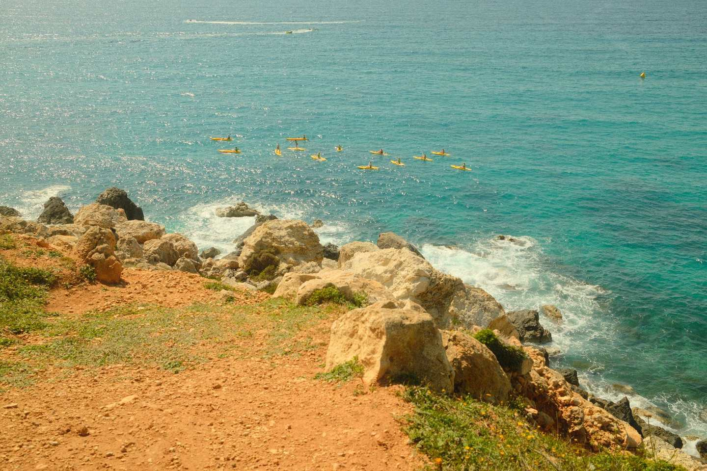
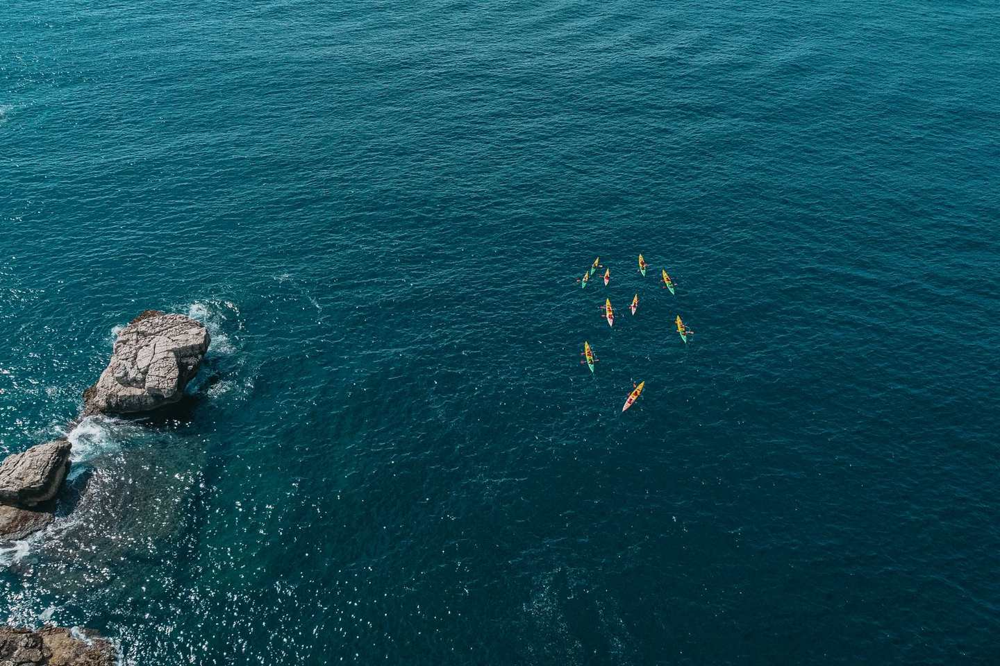

Sea kayaking in Pula
A quiet, active way to reach the coves, cliffs and caves that the road does not.

- Level
- Beginners welcome
- Best time
- Morning or late afternoon
- Bring
- Dry bag, water, sun protection
- Pairs well with
- Cave swimming

Why paddle
A kayak takes you where boats cannot go: into shallow coves, beneath cliffs and close to the entrance of sea caves. It suits beginners and experienced paddlers, and it fits neatly into a day that also includes a boat excursion or a cave swimming tour.
Four places to paddle
Cape Kamenjak
South of Pula near Premantura: clear water, sea caves, cliffs and quiet coves.
Galebove stijene
Seagull Rocks near the centre of Pula, in Stoja: caves and tunnels you can paddle into.
Medulin archipelago
Small islands, sandy beaches and shallow warm water, ideal for a full day with swimming stops.
Lim Bay
A fjord-like inlet about 40 minutes north of Pula, surrounded by cliffs and forest.
Good to know
- Paddle in the morning or late afternoon, when the wind is lighter
- Always wear a life jacket
- Bring a dry bag, water and sun protection
- Guided tours are best for caves and cliffs
- Guided tours and rentals
- Suitable for beginners
- Combine with a boat tour
- Ask for current times and prices
Paddling tips
Stay near the shore at first
Until you are confident, keep the coast within easy reach.
Wear quick-drying clothes
A swimsuit and a light top are all you need.
Tell us what you want to see
Caves, cliffs or calm beaches lead to different routes.
Frequently asked questions
Do I need experience?
Where do you paddle?
What goes in the dry bag?
Why is there no fixed kayak price on this page?
Ready to book?
Send us your dates and group size. We check availability and reply within 24 hours.